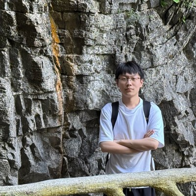

People
REAL Lab is led by Yongliang Shen at Zhejiang University, together with a group of PhD, master's, and undergraduate students working across reasoning, embodied, agentic, and learnable AI.
PhD Students
Master's Students
Hui Wang
MSc · 2024
Shangke Lyu
MSc · 2025
Teng Pan
MSc · 2025

Kaiwen Zhang
MSc · 2025
Yijun Li
MSc · 2025
Yaxin Zhang
MSc · 2025
Xudong Cai
MSc · 2025
Jinyan Chen
MSc · 2026
Guanghu Chen
MSc · 2026